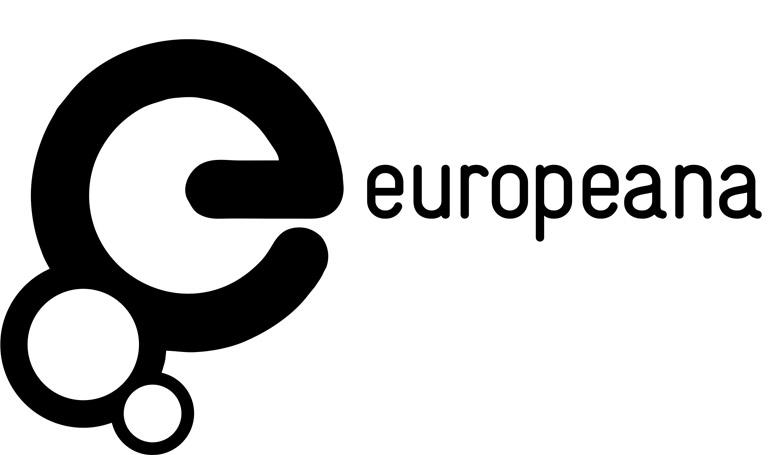
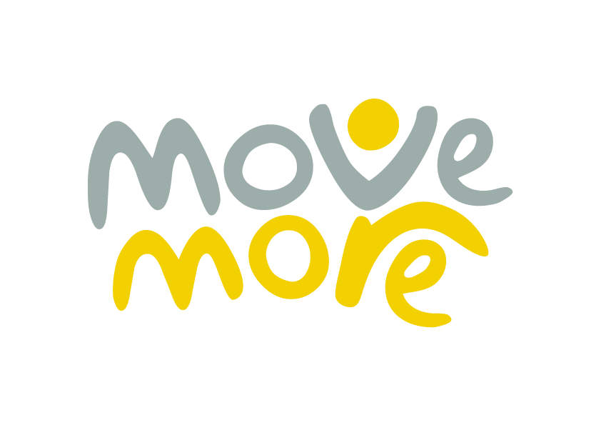
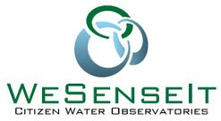
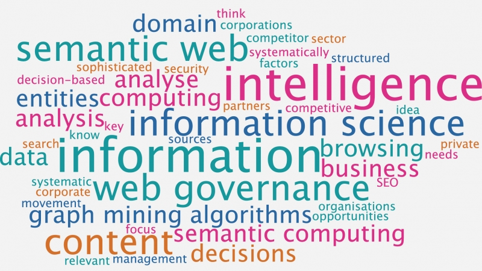

Current Projects:
- Social Media Early Rumour Detection and Weak Supervision
- This is a research project that work towards early rumour detection. Our Rumour detection task is to identify pieces of information on social media that is need to be verified. Manual annotation of large-scale and noisy social media data for rumors is highly labor-intensive, time-consuming and requires special skills and insight to a specific event. Existing rumor dataset are in relatively small size and suffer high class imbalance. The challenge of data scarcity slows down the progress of machine learning based rumor detection technique. This project investigate data augmentation techniques in rumor detection for the purpose of exploiting unlabeled social media data to augment limited labeled rumor data. We are sharing our augmented data to the community to support further development of machine learning based early rumor detection and study of rumor propagation patterns. In addition, based on the data augmentation technique, we are also working on a neural approach to the task of rumor detection can benefit from the inclusion of handcrafted features and state-of-the-art sentence embeddings. We present a novel neural network architecture that based on a combination of stacked Long short-term memory (LSTM) network and attention mechanisms that are used to encode tweet social context, and a SoA character-based biLM language model to encode short-text tweet. The main purpose of the research is to research and evaluate SoA multimodal feature representation learning through DNN and attempt to understand how attention mechanism helps to handle noisy context in social media. We have conducted ablation study to understand relative contribution of each component of our proposed model. Our neural approach achieves state-of-the-art performance on a collection of public dataset with strict evaluation and further improved marginally with a large augmented rumor dataset. We are now working on publishing our findings along with source code and dataset used in our experiment.
Past Projects:
- 
- Europeana DSI-3
- Europeana DSI-3 is a continuation of the previous Europeana DSI projects (Europeana DSI and Europeana DSI-2). The DSI-3 project operates the Europeana core service platform from mid-2017 to mid-2018. I'm the co-PI of the project. The goal of this project is the development of state-of-the-art (SoA) information retrieval (IR) methodology for the purpose of improving the availability and accessibility for European culture heritage. For current Europeana Collections platform, we are helping to improve indexing,search and infrastructure management for more than 50 million digital objects (e.g., artworks, books, videos, sounds) from more than 3500 museums, galleries, libraries and archives across Europe. In addition to manage current digital objects search platform, the collaboration project mainly focus on digitising 18 million historical newspapers from past 200 years which covers 10 million full text newspapers issue pages. In this project, we are researching and developing on SoA IR methods and new architecture to address the challenges of handling OCR generated text and NLP/NLU for historical text, meanwhile ensuring cross-language search. The work-in-progress can be tracked via periodic report and our github repository. The good news is that Europeana Newspapers has been published since 5th December, 2018. You can find the latest documentation about the search infrastructure.
- SETA – ubiquitous data and service ecosystem for better metropolitan mobility
- The objective of the SETA project is to provide effective solutions for intelligent and sustainable mobility i.e. the smarter, greener and more efficient movement of people and goods. SETA will provide a radical change from transport as a series of separate modal journeys to an integrated, reactive, intelligent, mobility system. It will provide always-on, pervasive services to citizens and business, as well as decision makers to support safe, sustainable, effective, efficient and resilient mobility. The project lasts 3 years, with €5.5M of funding from EU Horizon 2020 of which €1.2M is for Sheffield. Professor Ciravegna is the project director (2016-2019). I'm one of researchers & developers for the mobility tracking app working with Professor Ciravegna. I'm also the lead developer and manager of SETA mobility data collection infrastructure. Please find our deliverables via SETA website and the tracking app is available and will be updated in regular basis via Google Play.
- One You Active 10 Walk Tracker
- This project aims to address adults inactivity by creating a free app to motivate and measure how much brisk walking you are doing throughout the day and highlights how many continuous chunks of 10 minutes – known as Active 10s you achieve. The project is funded by Public Health England (PHE). I'm one of the major developers working with Prof. Fabio Ciravegna on Android tracking app, leading test and manage regular release and monitoring of PRODUCTION (through Google Play Console and Fabric). I am the lead developer and manager of Amazon Web Services (AWS) cloud (EC2 and RDS) based data collection infrastructure (RESTful APIs + Node.js cluster + PM2 + custom python/shell ETL & monitoring tools). Currently, big data collections are easy to do, but processing and analysing at scale becomes increasingly challenge. The platform handles the large amount of requests and support further data analysis. Data safety and privacy are also paramount. I have also led the work of data security, protection and management with respect to data confidentiality, integrity, availability and risk management. This work has been published via ISCRAM. I am also contributing to the development of the tracking app for Android, leading testing and the production and manage regular release of new versions into production. The Active 10 app has had over 600,000 downloads over 10 months. See also our department news and BBC coverage for details.
- 
- Move More App
- This project is to help Sheffield become the most active city in the UK by 2020. The app aims to stir some healthy competition. The app is designed to collect and reward even the smallest burst of exercise by counting our Move More Minutes of activity. This makes it easy for anyone to get involved in the challenge, regardless of fitness level. I'm one of two major developers on Android tracking app and university private cloud based data collection infrastructure.
- SPEEAK-PC – Sustained Process Excellence through Embedding of Analytics and Knowledge Management into Process Chain
- This is a Innovate UK funded project (project no: 101947). This project directly addresses the challenge for organisations to realise actionable knowledge from an ever increasing flood of potentially valuable data. Currently, the need for skilled ‘data scientists’ is a major bottleneck in this regard. The project applied existing techniques and developed new technologies to create an ICT tool set which alleviates this bottleneck through provision of a collaborative platform with tools for data integration and analytics deployment which are accessible to non-ICT specialists. The project is funded by Innovate UK, start date 1.10.2014 and has a length of 18 months. I was leading & coordinating the research for work package (WP) 3 (“Data Representation, Mining & Analysis”) and responsible for the delivery for two work packages (WP3 and WP4 – “terminology driven text mining and knowledge discovery application”) in SPEEAK-PC collaboration project with TATA Steel funded by Innovative UK. The deliveries have been successfully released to TATA Steel R&D team for further evaluation and commercialisation. The project was rated as second higher. Please see one of our deliverables - SPEEAK-PC Terminology Recognition, accessible via the [link].
- 
- WeSenseIt – Citizen Water Observatories
- WeSenseIt (www.wesenseit.eu) is a multi-site, multi-disciplinary project involving researchers and industrial partners in web technologies, environment, sensing, as well as social media monitoring. Working together with the EU and our sister projects this project aims to develop a new concept of citizen observatories of water creating a two communication channel between authorities and citizens in cooperating to monitor rivers, covering water quality to flooding.
- Lodie,Web Scale Information Extraction via Linked Open Data
- The linked open data information-extraction (LODIE) project, funded by EPSRC, focuses on the study of IE models and algorithms able to perform efficient user-centered web-scale learning by exploiting linked open data (LOD). I joined the LODIE team in final exploitation stage.
-

- JustGiving
- This is an industrial project collaborated with JustGiving data science team, aiming to apply artificial intelligence algorithms to knowledge mining and user/cause recommendation. The projects is consist of two phrases starting from Oct 2014 to Feb 2015. The main objective of the project ('CauseCat' and 'PeopleCat') and is creating user profiles for JustGiving users, adopting a feature space which is compatible with JustGiving data representation model. We start from identifying relevant data sources which are potentially useful for the categorization of JustGiving users, understand how reliable they are and their (charitable) causes. We analysed sample data obtained from Experian, as well as data obtainable from various social networks. The output of the exploration phrase is an internal technical report on the analysis of such data sources with an estimation of usefulness to characterise JustGiving users' profiles. In the following phrases, we then focused on identifying the actions needed to align the user profile feature space with JustGiving data representation, and understand if any adjustment is needed on the existing JustGiving data representation model. The output of this phrase is the implementation plan for a global JustGiving data representation (to represent users, charities, causes in the same feature space). In the final phrases, we implemented a prototype for further evaluation in JustGiving PROD. The outcome of the project was finally evaluated in JustGiving PROD to drive donations and engagements via e.g., "You might be interested in" feed card and email subscription. Additional geographical element is added to avoid suggesting local charities to non-local users. The experiment was targeted up to 100k users. The initial A/B testing result shows that our model's output is a statistically significant predictor of what users are interested in. Major techniques in this project cover language modelling, information extraction and clustering, probablistic modelling and supervised learning.
- 
- KTP Project
- The R&D project (KTP project 007326) is funded by the Innovative UK (formerly UK Technology Strategy Board). I was a leading team member in the project to undertake the Knowledge Transfer Partnership (KTP) objectives as defined in the KTP proposal covering the development of new semantic systems and services on ActiveStandards platform, in order to assist businesses and organizations to discover, understand and act on the actionable knowledge within their information repositories. This is a industry collaboration project with Magus Research Ltd (now Crownpeak) and Cognitive Computing Research Group in University of Westminster. Main technologies in this project covers knowledge extraction (more specifically cross-domain NER and relation extraction with GATE), knowledge management and retrieval (RDF, RDFS, OWL) with OWLIM-SE (now rebranded as GraphDB), entity linking and knowlege base enrichment (via linked open data) and Enterprise Information Integration (ontology normalisation), Web compliance (SEO and fact checking). For ontology population technique, a upper level ontology is adopted as basis and a starting point for the knowledge modelling of various vertical domains. For the semantic infrastructure, our solution extends KIM platform through the collabration with Ontotext R&D team. The partnership project has been graded as second higher level which will be shortlisted as one of KTP case-studies among 250 national funded projects. Please see more details in the case study page.